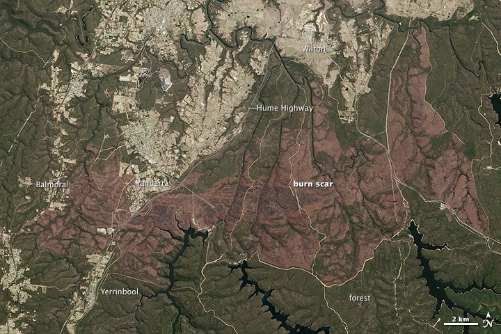
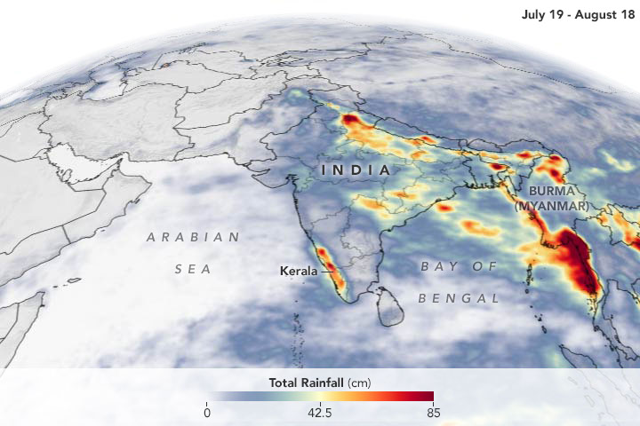
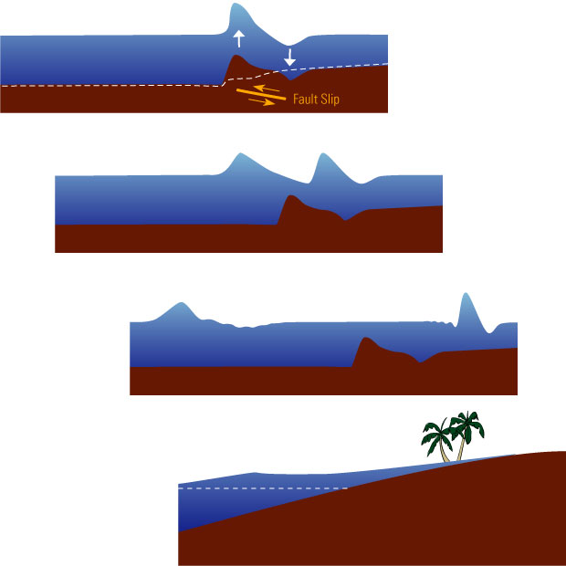
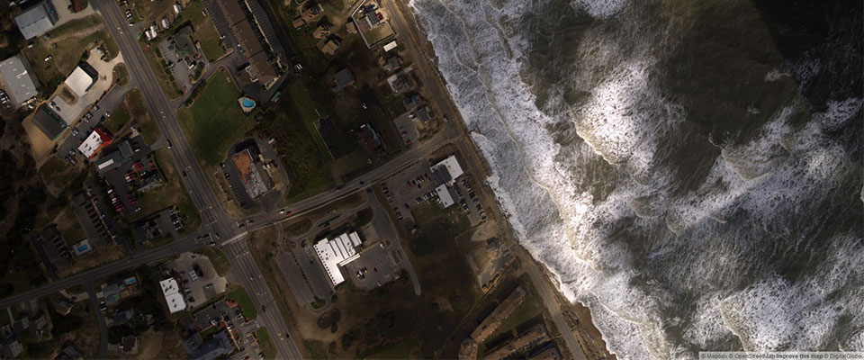
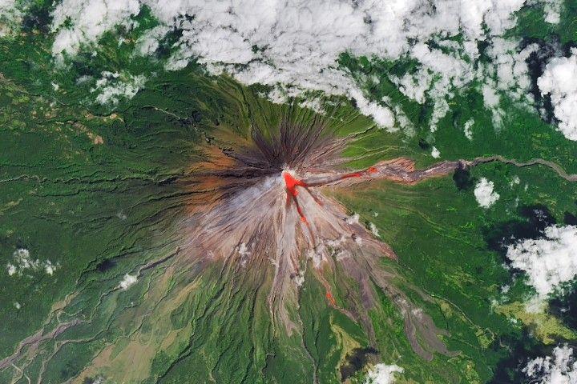
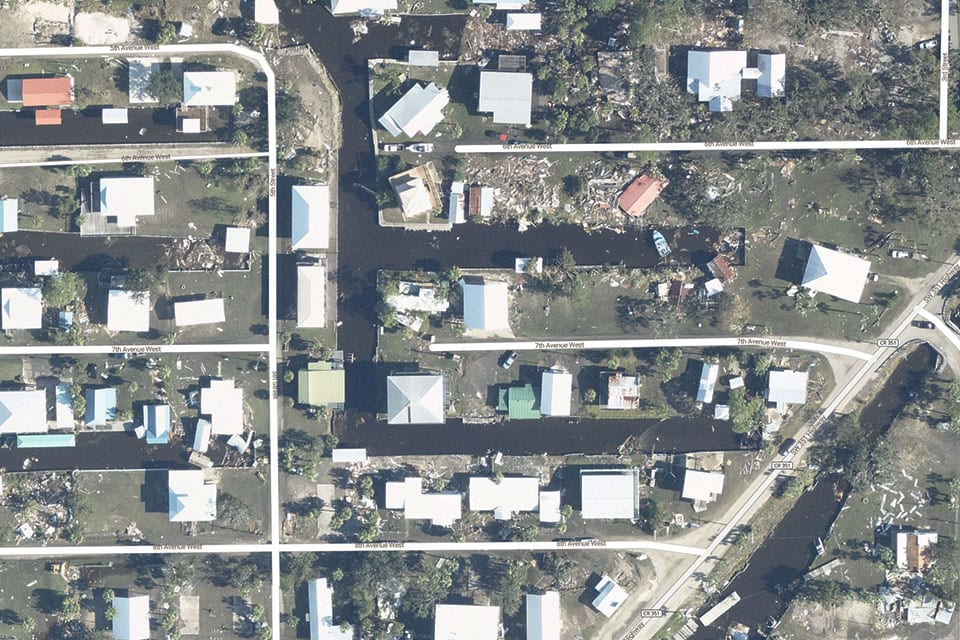
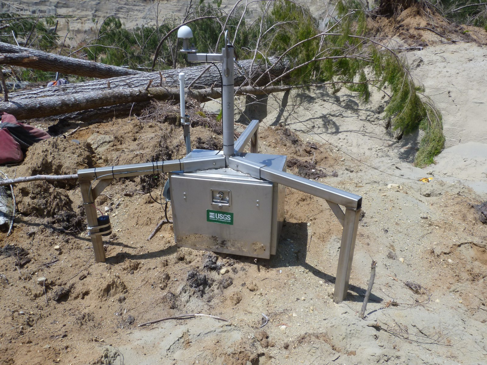

Package-local evidence

Discover the relevant files inside an isolated event package and preserve package-relative provenance.
Scientific agents for a dynamic Earth
EarthVerse puts research agents to work on real geoscience and natural-hazard investigations.
Each of its 405 expert tasks starts with one of 199 event packages. The model has to find the right local files, do the required calculations, reconstruct the physical process, and give an answer that can be checked.
19 hazard families / official observations
Select a scene to inspect the corresponding EarthVerse tasks.
Why EarthVerse

Discover the relevant files inside an isolated event package and preserve package-relative provenance.

Run transparent calculations, retain units and intermediate values, and test sensitivity across sources.

Reconstruct timing and mechanism, compare competing explanations, and connect observed responses causally.

Return a structured conclusion whose fields, values, evidence, and reasoning can be independently scored.
Inside the dataset / CSX-055
Every task begins inside an isolated event package. The agent must find the useful sources, connect measurements across formats, and leave a trace from evidence to conclusion.
Seven capability lenses
deduplicated package-local evidence files spanning reports, tables, archives, rasters, imagery, and catalogs.
EarthVerse, end to end
EarthVerse evaluates the complete path from an unfamiliar event package to a defensible scientific conclusion. Evidence choice, calculations, mechanism reasoning, and the final answer remain inspectable.
Isolated context
Each task starts from a bounded local event package rather than an answer-bearing prompt.
Prevents web recall and hidden cross-task leakageEvidence selection
The model lists, searches, reads, and prioritizes files before it can form a conclusion.
Measures retrieval quality and exploration disciplineScientific work
Formulas, units, windows, intermediate values, and source differences remain in the trace.
Separates numerical reasoning from plausible proseEarth-system inference
Tasks require temporal reconstruction, causal links, and rejection of weaker explanations.
Tests whether evidence supports the claimed processScoring contract
Structured fields and task-specific rubrics score both conclusions and their reasoning paths.
Supports reproducible task-level error analysisScientific breadth
The release connects 19 hazard families with 7 capability lenses across 6,709 evidence files and 10,879 answer units, grounded in documented events rather than synthetic scenarios.
Why the tasks are difficult
Representative tasks require more than extracting a reported number. The model must decide what to inspect, construct intermediate quantities, and defend a process-level interpretation.
Observe / measure / explain
EarthVerse connects orbital measurements, rapid-response imagery, and instrumented field observations into one traceable reasoning process.



Published results
A single calibrated judge scores answer units and each task's 20-point reasoning rubric together.
Published EarthVerse results
Compare answer accuracy, rubric quality, capability dimensions, and research-process costs.
Exacting task success
All published systems, ordered by tasks where at least 95% of required answer units are correct.
Published evaluation
| Rank | Model | Answer | Rubric | Mean core | Strict@95 | Rounds | Files | Latency | Tokens | Results |
|---|
System result archive
Inspect EarthVerse scores, research-process diagnostics, and task-level outputs.
Highest-scoring investigations
Task record sample
Research process archive
Inspect how selected systems discovered files, calculated intermediate values, fused evidence, and reached a final answer for the same task.
Inspect five preserved exploration trajectories.
405 expert investigations
Explore each question together with its complete event package, hidden solution, computed ground truth, review, and source-level evidence.
Inspect the question, answer materials, and every file inside its event package.